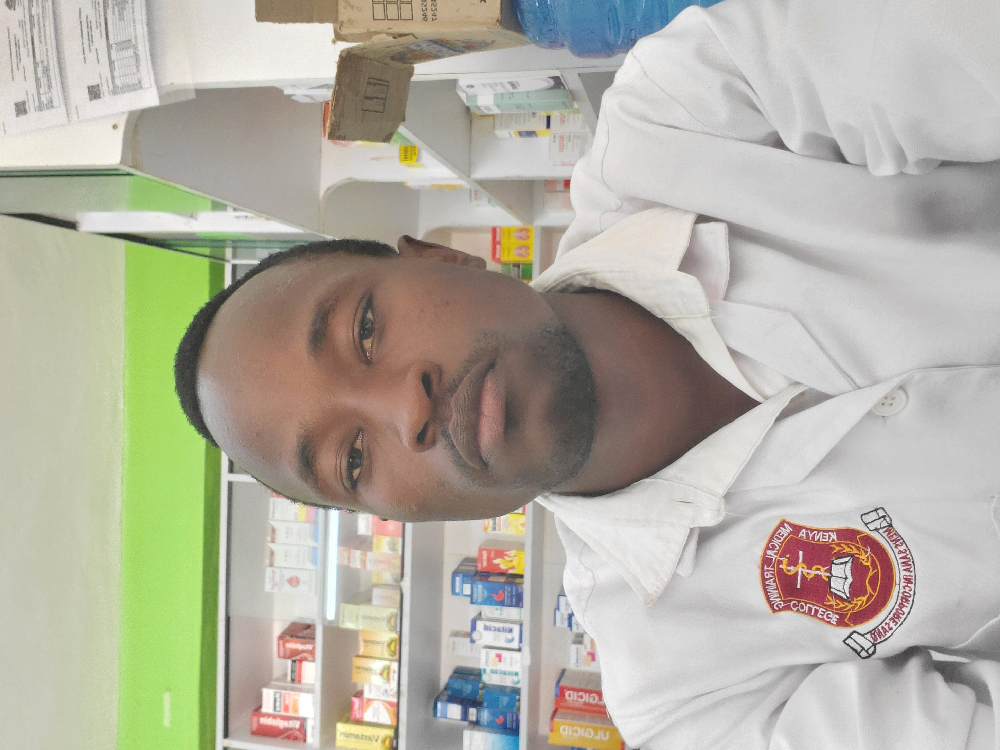

I am a trained Pharmacy Professionalas a pharmaceutical technologist from the Kenya Medical Training College (KMTC), with practical experience in hospital and community pharmacy settings. I am passionate about safe medication use, patient care, and providing quality pharmaceutical services.
Mogaka Sylvester
PHARMACEUTICAL TECHNOLOGIST • KENYA
Mogaka Sylvester
Stephen
Diploma-trained pharmacy professional focused , p.

Pharmacy Professional
KMTC Pharmacy background
Hospital & community pharmacy experience
ABOUT ME
Professional profile
I am a pharmacy professional trained through Kenya Medical Training College (KMTC), with practical exposure in both hospital and community pharmacy settings. My experience includes pharmaceutical dispensing, patient-focused services, medicine handling and day-to-day pharmacy operations.
DiplomaPharmacy
KMTCPharmacy training
HospitalPractical attachment
CommunityPharmacy experience
EXPERIENCE
Practical experience
Community Pharmacy Attachment
Qmed Pharmaceuticals, Kirinyaga
Community pharmacy experience involving dispensing practice, customer-facing services, medicine handling and routine pharmacy operations.
CORE COMPETENCIES
What I bring
01
Dispensing Practice
Prescription interpretation, accurate dispensing and patient-oriented medicine services.
02
Patient Care
Clear communication and responsible support for patients using medicines.
03
Pharmacy Operations
Experience across hospital and community pharmacy environments.
04
Professional Growth
Committed to continuous learning and development within the pharmaceutical field.
PROFESSIONAL INTERESTS
Areas of interest
GET IN TOUCH
Let's connect.
For professional opportunities, pharmacy-related collaborations or career enquiries, reach out directly.